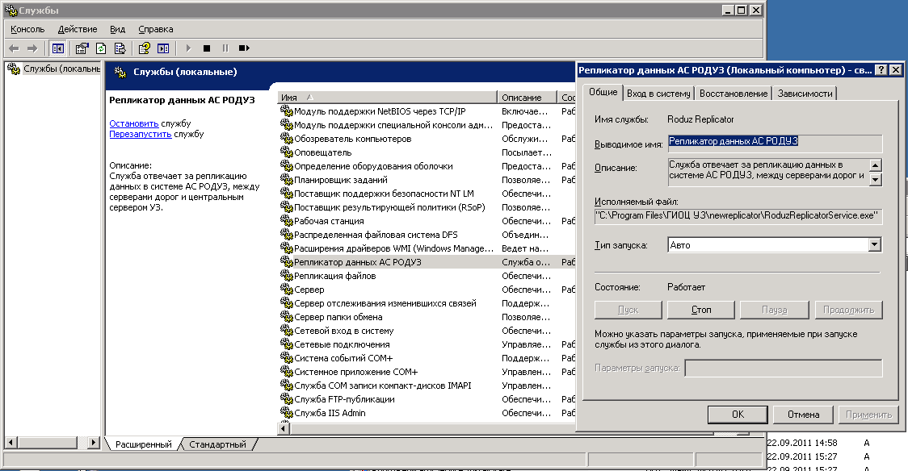

Репликатор установлен в директорию: "C:\Program Files\ГИОЦ УЗ\newreplicator".
Запустить консоль управления службами можно через: "Панель управления\Администрирование\Службы" (рис. 1)

Рисунок 1. Служба репликатора на сервере 10.1.100.228
Файл конфигурации репликатора находится в том же каталоге что и репликатор и называется: RoduzReplicatorService.exe.config
Управление репликатором осуществляется через специальный интерфейс, который находится в проекте репликатора в папке ReplicatorUI.
Для корректной работы интерфейсе в его конфигурационном файле должен быть указан правильный адресс.
| Имя файла | Описание | Место хранения |
|---|---|---|
| AppConf.xml | Хранит настройки подключения ГМ к серверу. Файл зашифрован и настраивается исключительно из ГМ. | Корневая папка ГМ. |
| connectrd.ora | Хранит пользовательский скин (обложку) | Корневая папка ГМ. |
| hash.xml | Хранит Hash-суммы для подгружаемых файлов АС РОДУЗ. Также в нём собрана информация для представления дерева подгружаемых файлов. | \\10.1.100.16\fs\moduleroduz (сервер обновляемых модулей) |
| schema.xml | Хранит схему таблицы для построения источника данных TreeList. | \\10.1.100.16\fs\moduleroduz (сервер обновляемых модулей) |
| updatelog.xml | Хранит журнал обновления файлов (модификация и/или добавление файлов) | \\10.1.100.16\fs\moduleroduz (сервер обновляемых модулей) |
| Дорога (код) | IP-сервера | Настройки удаленного доступа | Контактное лицо |
|---|---|---|---|
| Південно-західна (32) | 10.2.100.55 |
|
Разумов Павел : 5-32-01 |
| Львівська (35) | 10.3.103.18 |
|
Дудаш Олег : 6-27-15 |
| Одеська (40) | 10.4.112.5 | нет удаленного доступа | Тодоренко Галина : 8-09-58 |
| Південна (43) | 10.5.114.21 | нет удаленного доступа | Ламтев Константин : 4-51-97 |
| Придніпровська (45) | 10.6.104.42 | нет удаленного доступа | 3-64-38 спросить с кем можна поговорить по РОДУЗу. |
| Донецька (48) | 10.7.224.25 |
|
Портнов Юрий : 2-52-82 |